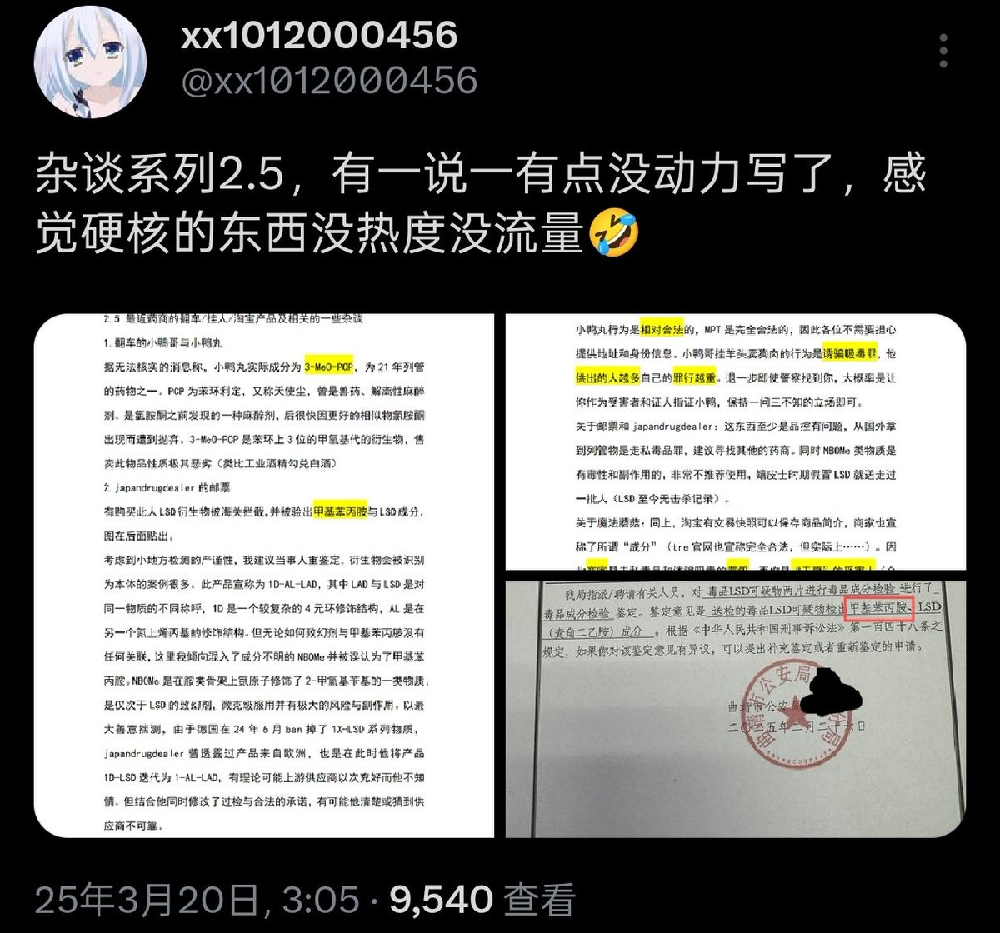
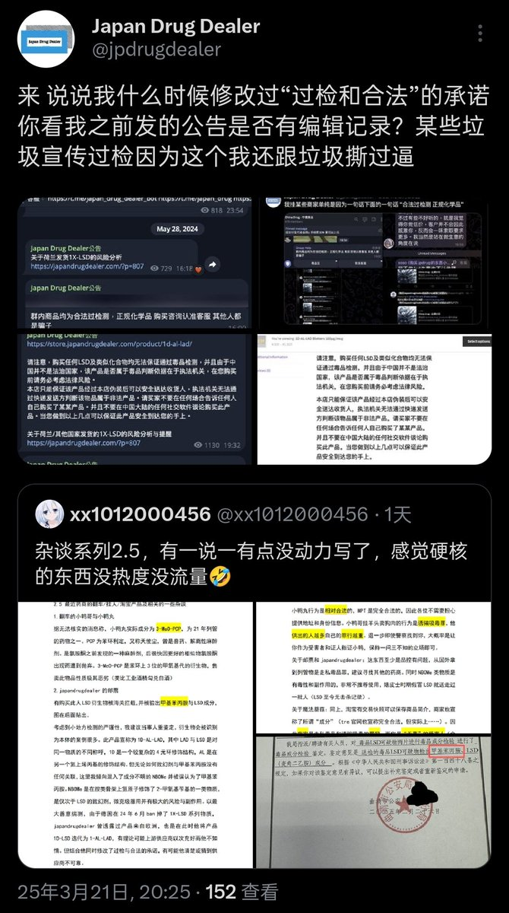

xx1012000456
@xx1012000456
@lainken717 @jpdrugdealer 1严格来说他还是我从od圈向策划药圈的引路人，我推特最早的帖子就是他的转发抽奖，我没有任何必要和他争吵
2NBOMe是极其恶劣的劣质品，LSD至今没有击杀记录而NBOMe从嬉皮士时期就杀人无数，更不要提可能的神经、心脏毒性。退一步讲即使不是，购买策划药就是为了规避风险，这份检验报告是他必须要解释的


小七
@lainken717
@jpdrugdealer @xx1012000456 这个社区已经很乱了，真的不希望再乱下去。作为消费者，我只想安安静静购买我想要的东西。真心希望二位能好好交流，我们都需要获取各自的利益，都有着各自的立场对吧？OD本质上难道不是大家对于国内社会问题愈发严重而感到压抑的体现吗？争吵或许不该出现在二位之间。 https://t.co/SHw9eoDIgP